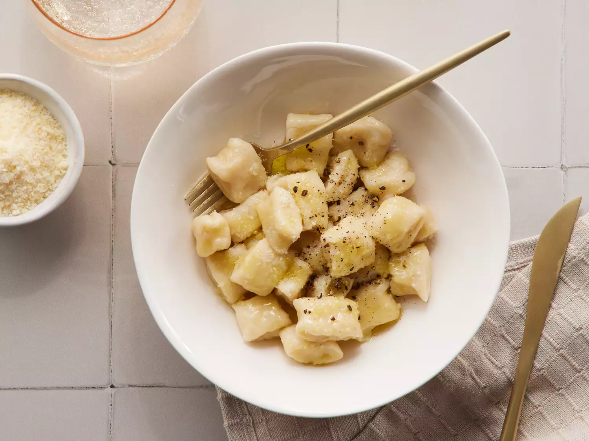

Gnocchi Recipe
Gnocchi (singular gnocco) are Italian dumplings made with flour, eggs, and potatoes. Gnocchi can be served in tomato sauce, tossed with pesto, or sautéed with butter and herbs.
Ingredients
- Potatoes: Use starchy potatoes, such as russets.
- Flour: All-purpose flour absorbs moisture and helps create gluten.
- Egg: An egg lends moisture and acts as a binder, which means it helps hold the dumplings together.
- Salt: Kosher salt enhances the overall flavor.
Steps
- Boil and drain the potatoes, then mash or pass through a ricer.
- Combine the ingredients, then knead into a ball.
- Divide the dough into four even portions and shape into "snakes."
- Cut the snakes into pieces.
- Boil and drain the gnocchi.